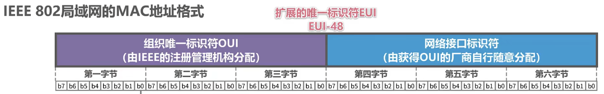
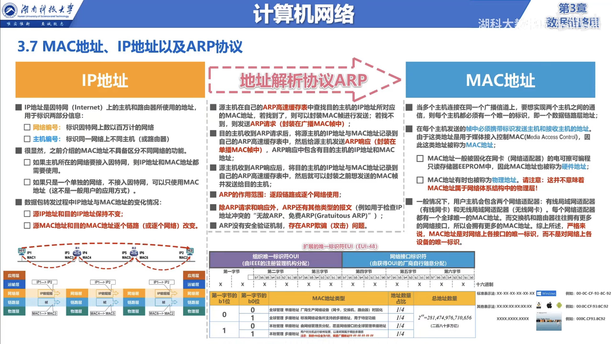

MAC 地址
MAC 地址是指网卡的物理地址，它是一个 48 位的二进制数，通常用 12 位的十六进制数表示。属于数据链路层的地址。
MAC 地址的作用
当多个主机连接在同一个以太网中时，每个主机都必须有一个唯一的标识，即一个数据链路层地址。
在每个主机发送的帧中，都必须包含目的主机的数据链路层地址。由于这类地址是用于媒体接入控制的，因此又称为 Media Access Control Address，简称 MAC 地址。
- MAC 地址一般由网卡的制造商来分配，被固化在 EEPROM 中，每个网卡都有一个唯一的 MAC 地址，这称之为硬件地址。但是，近年来，一些设备提供了随机生成 MAC 地址的功能，这样就可以保护用户的隐私。
- 有时也被称为物理地址，但是这种说法不准确，因为 MAC 地址并不是物理上的地址，而是逻辑上的地址。
一般，用户有两个网络适配器，一个是有线网卡，一个是无线网卡，每个网卡都有一个唯一的 MAC 地址。这是对接口的唯一标识，而不是对设备的唯一标识。
IEEE 802 MAC 地址
IEEE 802 MAC 地址是指在 IEEE 802 标准中定义的 MAC 地址，它是一个 48 位的二进制数，通常用 12 位的十六进制数表示。也是扩展的唯一标识符 EUI-48。
通过 MAC 地址，我们可以知道这个网卡是由哪个厂商生产的，这个网卡是什么型号，这个网卡是什么时候生产的。
IEEE 802 MAC 地址的前 24 位称为组织唯一标识符 OUI，由 IEEE 的注册管理机构分配给组织，用于标识组织。这 24位分成3个字段，每个字段包含 8 位，称为 OUI 的第一、第二、第三字节。
IEEE 802 MAC 地址的后 24 位称为扩展标识符 EI，由组织自行分配，用于标识组织内的设备。这 24 位分成 3 个字段，每个字段包含 8 位，称为 EI 的第一、第二、第三字节。也叫第四、第五、第六字节。
标准表示法: XX-XX-XX-XX-XX-XX
例如: 00-0C-29-3F-2C-1A
这在 Windows 系统中使用的是最常见的表示法。以太网表示法: XX:XX:XX:XX:XX:XX
例如: 00:0C:29:3F:2C:1A
这在 Linux 系统中使用的是最常见的表示法。IOS、Mac OS X、Android 也使用这种表示法。无分隔符表示法: XXXXXXXXXXXX
例如: 000C293F2C1A
这种表示法在 Cisco IOS 中使用。其他表示法 1: XX.XX.XX.XX.XX.XX
例如: 00.0C.29.3F.2C.1A其他表示法 2: XXXX-XXXX-XXXX
例如: 000C-293F-2C1A其他表示法 3: XXXX.XXXX.XXXX
例如: 000C.293F.2C1A

第一字节
| 位 | 取值 | 含义 |
|---|---|---|
| b0 | 0 | 单播地址 |
| b0 | 1 | 组播地址 |
| b1 | 0 | 全球管理 |
| b1 | 1 | 本地管理 |
| b0=0 | b0=1 | b1=0 | b1=1 | MAC 地址类型 | 地址占比 | 说明 |
|---|---|---|---|---|---|---|
| √ | √ | 全球管理单播地址 | 25% | 厂商生产网络设备时固化 | ||
| √ | √ | 本地管理单播地址 | 25% | 由网络管理员分配 | ||
| √ | √ | 全球管理组播地址 | 25% | |||
| √ | √ | 本地管理组播地址 | 25% | 用户对主机进行配置时使用，如果剩余46位全为1，则表示广播地址 FF-FF-FF-FF-FF-FF |
所以可以计算总地址数量为 $2^{48} = 281,474,976,710,656$ 个。
IP 地址
IP 地址是指互联网协议地址，它是一个 32 位的二进制数，通常用 4 个 8 位的十进制数表示。属于网络层的地址。
IP 地址的作用
IP 地址是因特网上主机和路由器的标识符，用于标识两部分信息：
网络号：用于标识主机所在的网络
主机号：用于标识主机
所以，MAC 地址不具备区分网络的能力，而 IP 地址具备区分网络的能力。
如果是单独网络，不接入因特网，那么只需要使用 MAC 地址就可以了。
如果是接入因特网，那么就需要 IP 地址与 MAC 地址配合使用。
ARP 协议
ARP 协议是指地址解析协议，它是一种将 IP 地址解析为 MAC 地址的协议，属于网络层的协议。
